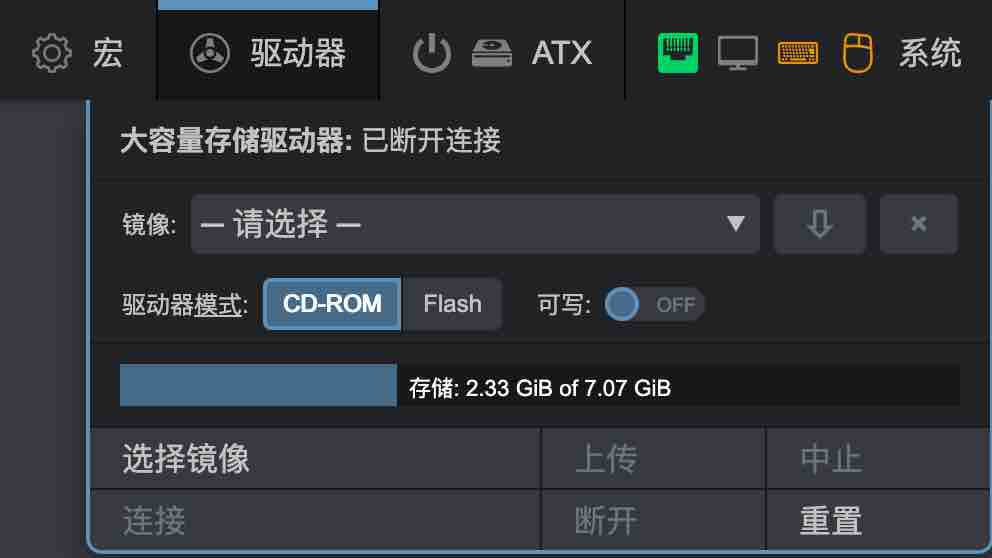
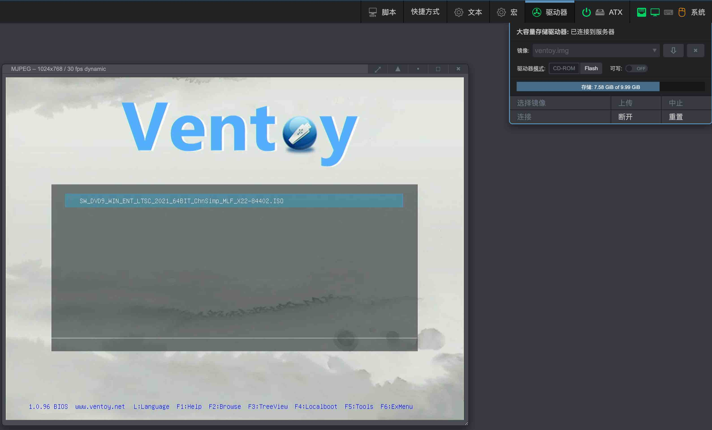
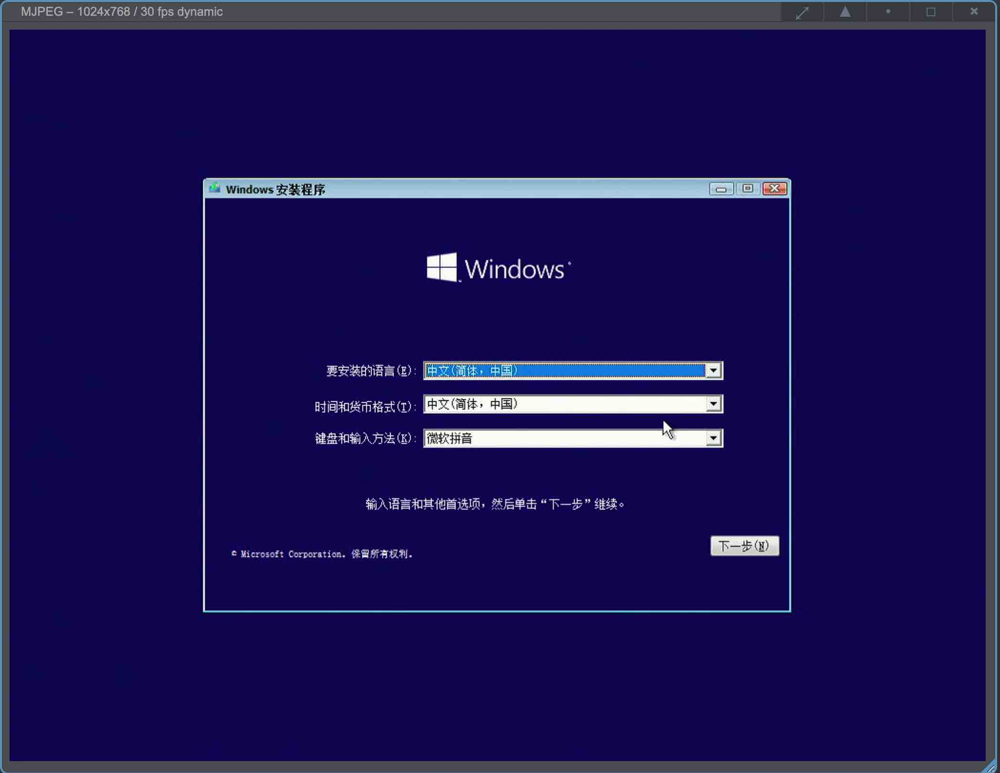

MSD大容量存储驱动器
MSD(Mass Storage Drive)大容量存储驱动器，它允许 OPiKVM 为目标主机模拟虚拟 CD/DVD 或闪存驱动器， 即使在需要 Live CD 恢复操作系统或重装系统的 BIOS/UEFI 环境下也可使用。
查看 Web UI 中的 驱动器 菜单 |
|---|
|  |
此处提供以下操作：
- 将镜像上传至 OPiKVM MSD分区
- 选择要连接至目标主机的镜像
- 更改媒体类型和写入模式
- 从 OPiKVM 存储下载镜像
- 驱动器连接管理等
Warning
在镜像上传期间或镜像以写入模式连接至目标主机时，切勿关闭 PiKVM 电源。 否则可能导致文件损坏。
只有在重新连接设备时，才能在CD-ROM和Flash之间更改介质类型
可以使用Web UI中的系统 -> OTG连接到目标主机开关来完成重新连接设备的操作。
驱动模式是在连接镜像时确定的，而不是通过切换驱动器模式时确定的。
简单来说，通过驱动器模式修改过模式后，需要点击连接使其更改生效，但是远程主机不会实时变化，你需要通过关开将OTG连接到目标主机模拟USB拔插的操作来使远程主机端识别到驱动器类型的变化。
上传镜像
OPiKVM 将镜像存储在挂载于 /var/lib/kvmd/msd 的专用存储卡分区中。
大多数情况下该分区为只读状态，在启用驱动器仿真模式或上传新镜像时会自动重新挂载为可写模式。 此机制可防止突发断电导致的数据损坏。
-
点击
选择镜像 -> 选择文件，选择镜像。
-
点击上传,出现上传进度条，点击中止可以中断上传任务。

如果你有手动上传镜像的需求,分步操作：使用 SCP 或 rsync 手动上传镜像
-
手动将内部存储重挂载为读写模式：
[root@opi-kvm ~]# kvmd-helper-otgmsd-remount rw -
使用
scp等工具将镜像上传至/var/lib/kvmd/msd -
将内部存储重挂载回安全的只读模式：
[root@opi-kvm ~]# kvmd-helper-otgmsd-remount ro
连接镜像
-
镜像下拉框中选择镜像，点击连接，通过ATX打开远程主机电源，进入bios启动项页面，选择PiKVM CD-ROM Driver，回车开始引导
-
远程主机开始引导镜像

管理镜像
-
点击
断开，大容量存储驱动器状态成为已断开连接状态下，镜像下拉选中需要操作的镜像，点击下拉框右侧的下载、删除按钮对镜像进行相应操作。
可写闪存驱动器
当 OPiKVM 模拟闪存驱动器时，可允许目标主机向镜像写入文件。 停止驱动器后，可下载此镜像并在本地主机打开。 适用于需要从目标主机获取文件的场景，具体方案请参考文件传输。
NFS 存储
使用 NFS 可为整个 OPiKVM 集群创建共享镜像存储。
若有现成共享，可通过创建挂载点并添加相关记录到 /etc/fstab 轻松连接至 PiKVM。
此时您既能通过 PiKVM Web UI 上传镜像至 NFS，也能继续使用本地存储。
分步操作：连接 NFS 存储
-
执行准备工作：
[root@opi-kvm ~]# kvmd-helper-otgmsd-remount rw [root@opi-kvm ~]# mkdir -p /var/lib/kvmd/msd/NFS_Primary [root@opi-kvm ~]# mkdir -p /var/lib/kvmd/msd/NFS_Secondary [root@opi-kvm ~]# kvmd-helper-otgmsd-remount ro ```
-
将 NFS 共享添加到
/etc/fstab：server:/srv/nfs/NFS_Primary /var/lib/kvmd/msd/NFS_Primary nfs vers=3,timeo=1,retrans=1,soft,nolock 0 0 server:/srv/nfs/NFS_Secondary /var/lib/kvmd/msd/NFS_Secondary nfs vers=3,timeo=1,retrans=1,soft,nolock 0 0 -
执行
reboot应用所有更改
确保 kvmd 用户对这些目录拥有读取权限（如需写入也可授权）。
为获得最佳性能，需确保与 NFS 服务器的可靠连接并使用最小 timeo 和 retrans 值。
必须使用 soft 选项，建议使用 nolock。
注意：若从外部向 NFS 存储添加镜像，OPiKVM 无法跟踪此事件，
需使用 Web UI 的 驱动器 -> 重置 刷新镜像列表。
NFS 服务器配置不在本文档讨论范围内。
Samba/CIFS 存储
若已有本地 Samba 服务器（如 Unraid 或其他 NAS），可直接使用其中的 ISO 文件。 需要重启才能刷新共享中的可用 ISO 列表。
分步操作：连接 Samba/CIFS 存储
-
执行准备工作：
[root@opi-kvm ~]# kvmd-helper-otgmsd-remount rw [root@opi-kvm ~]# mkdir -p /var/lib/kvmd/msd/isos [root@opi-kvm ~]# kvmd-helper-otgmsd-remount ro -
将 Samba/CIFS 共享添加到
/etc/fstab：//192.168.0.1/isos /var/lib/kvmd/msd/isos cifs guest,_netdev,nofail 0 0 -
执行
reboot应用所有更改
多驱动器配置
默认 OPiKVM 为大容量存储仿真创建一个虚拟驱动器。 但必要时可通过终端控制台创建附加驱动器进行管理。 此功能适用于需要从第一个驱动器启动目标主机， 然后连接第二个驱动器传输文件的场景。
Note
第一个虚拟驱动器可通过 Web UI（驱动器菜单）和终端命令行工具管理。
附加驱动器仅能通过控制台控制。
附加驱动器可能会涉及兼容性的问题： 假设同一USB上有多个驱动器，可能在极少数BIOS/UEFI下导致无法识别到对应的驱动器。 因此出于稳定性考虑，此功能需手动激活。 建议提前设置驱动器，确保特定目标主机仍能从 ISO CD 或 Flash 启动， 再按计划使用驱动器。
附加驱动器会消耗更多端点资源，详见：
USB 限制
每个模拟的 USB 设备消耗一个名为 endponits 的有限硬件资源。
根据设备的不同，所需的端点数量不同：
| 设备 | 端点数 |
|---|---|
| 键盘、鼠标 | 每个 1 个 |
| 大容量存储驱动器 | 每个 2 个 |
| USB 麦克风 | 2 个 |
| USB 网络、USB 串口 | 每个 3 个 |
总的来说，PiKVM 为 USB 模拟提供了 9 个端点，以下是OPiKVM默认使用的：
- 键盘
- 鼠标(Absolute)
- 大容量存储驱动器
要添加第二个虚拟驱动器，请按照以下步骤操作：
添加附加驱动器用于虚拟U盘
-
切换至root权限，编辑
/etc/kvmd/override.yaml:otg: devices: drives: enabled: true # Set it to true to enable count: 1 # +1 drive, default value default: # Default configuration for the all extra drives cdrom: false # Default value (false for the generic flash drive) rw: false # Read-only by default或者直接使用指令添加配置文件
cat << EOF > /etc/kvmd/override.d/extraUSB.yaml otg: devices: drives: enabled: true # Set it to true to enable count: 1 # +1 drive, default value default: # Default configuration for the all extra drives cdrom: false # Default value (false for the generic flash drive) rw: false # Read-only by default EOF -
重启PiKVM:
[root@opi-kvm:~#] reboot
手动驱动器管理
kvmd-otgmsd 命令行工具用于管理附加驱动器（及第一个主驱动器）。
运行 kvmd-otgmsd --help 查看完整选项列表。
分步操作：创建附加闪存驱动器镜像以从目标主机获取文件
-
创建指定大小的空镜像文件（本例 1GB, -s 指定镜像大小, -t 指定文件系统类型）：
[root@pikvm ~]# make-flash.sh -p /root/flash.img -s 1 -t vfat -
将其连接到驱动器
1（创建过程见前文）：!!! note * 索引[root@pikvm ~]# kvmd-otgmsd -i 1 --set-rw=1 --set-cdrom=0 --set-image=/root/flash.img0代表通过 Web UI 和 API 控制的主驱动器 *--set-cdrom=1时：小镜像作为 CD-ROM，大镜像作为 DVD-ROM 注意 CD/DVD 不可写（此时应使用--set-rw=0） -
此步骤后，可从目标主机访问闪存驱动器并按常规方式格式化
-
查看驱动器状态：
[root@pikvm ~]# kvmd-otgmsd -i 1 Image file: /root/flash.img CD/DVD flag: no RW flag: yes -
要禁用闪存驱动器并在 PiKVM 上查看文件：
[root@pikvm ~]# kvmd-otgmsd -i 1 --unlock --eject -
可通过 SCP 下载最终镜像，或在 OPiKVM 上挂载至
文件管理器中：[root@pikvm ~]# mount -o loop /root/flash.img /mnt [root@pikvm ~]# ls /mnt [root@pikvm ~]# umount /mnt
禁用大容量存储
极少数情况下，若 BIOS/UEFI 无法正确识别 Mass Storage 甚至拒绝使用 USB 键鼠，可能需要禁用此功能。
分步操作：永久禁用大容量存储
-
编辑
/etc/kvmd/override.yaml添加配置：kvmd: msd: type: disabled -
执行重启：
[root@opi-kvm ~]# reboot
使用Ventoy引导镜像
-
创建Ventoy引导镜像，镜像大小根据您所需要的安装镜像大小决定，这里以win10安装镜像为例子创建一个容量为5G的空白Ventoy引导。
su - kvmd-helper-otgmsd-remount rw dd if=/dev/zero of=/var/lib/kvmd/msd/ventoy.img bs=1M count=5000 status=progress -
下载Ventoy工具，对引导镜像进行分区并格式化。
cd ~ wget https://github.com/ventoy/Ventoy/releases/download/v1.0.96/ventoy-1.0.96-linux.tar.gz tar zxvf ventoy-1.0.96-linux.tar.gz kvmd-helper-otgmsd-remount rw losetup -f /var/lib/kvmd/msd/ventoy.img sh ~/ventoy-1.0.96/Ventoy2Disk.sh -i "$(losetup -l | grep ventoy | awk '{print $1}')" y y mkdir -p /mnt/ventoy mount "$(losetup -l | grep ventoy | awk '{print $1}')p1" /mnt/ventoy -
将需要的安装包镜像文件拷贝至Ventoy引导镜像目录中，此时Ventoy的镜像目录挂载至/mnt/ventoy。
Warning
拷贝镜像前，请使用
df -h指令确认/mnt/ventoy目录已经挂载root@orangepizero3:~# df -h Filesystem Size Used Avail Use% Mounted on tmpfs 99M 7.1M 92M 8% /run /dev/mmcblk0p1 4.3G 2.4G 2.0G 55% / tmpfs 491M 148K 491M 1% /dev/shm tmpfs 5.0M 4.0K 5.0M 1% /run/lock tmpfs 491M 0 491M 0% /tmp /dev/mmcblk0p2 10G 6.9G 2.7G 73% /var/lib/kvmd/msd /dev/zram1 47M 548K 43M 2% /var/log tmpfs 99M 0 99M 0% /run/user/0 /dev/loop0p1 4.9G 96K 4.9G 1% /mnt/ventoyscp windows.iso /mnt/ventoy或者使用FileBrowser工具，将iso上传至/mnt/ventoy

提示
FileBrowser的默认根目录为/mnt
提示
增加/更换ventoy内的安装镜像，不需要重建ventoy镜像，只需要增加/替换ventoy内的安装镜像，方法如下：
- 将ventoy.img挂载至/mnt/ventoy目录下
su - kvmd-helper-otgmsd-remount rw mount -o loop,offset=1048576 /var/lib/kvmd/msd/ventoy.img /mnt/ventoy df -h - 使用scp或者FileBrower将需要的安装包镜像文件更新至/mnt/ventoy，提前
df -h确认/mnt/ventoy已挂载df -h scp windows.iso /mnt/ventoy - 镜像传输完成后，取消ventoy.img挂载，完成更新镜像
umount /mnt/ventoy
- 将ventoy.img挂载至/mnt/ventoy目录下
-
待上传完成后取消挂载，并删除losetup设备
umount "$(losetup -l | grep ventoy | awk '{print $1}')p1" losetup -d "$(losetup -l | grep ventoy | awk '{print $1}')" -
在
驱动器使用Flash模式挂载ventoy.img镜像，bios选择从PiKVM启动引导进入ventoy，按L键选择语言，选中镜像后回车选择正常启动，则可以开始windows安装程序，等待3-5分钟，安装程序开始。 